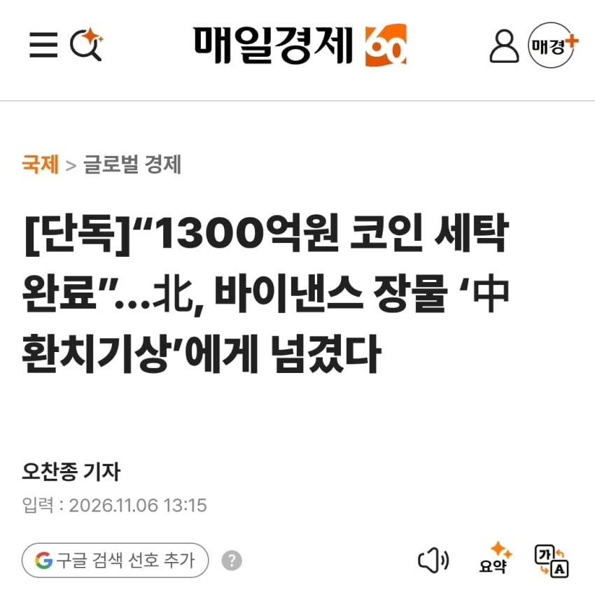
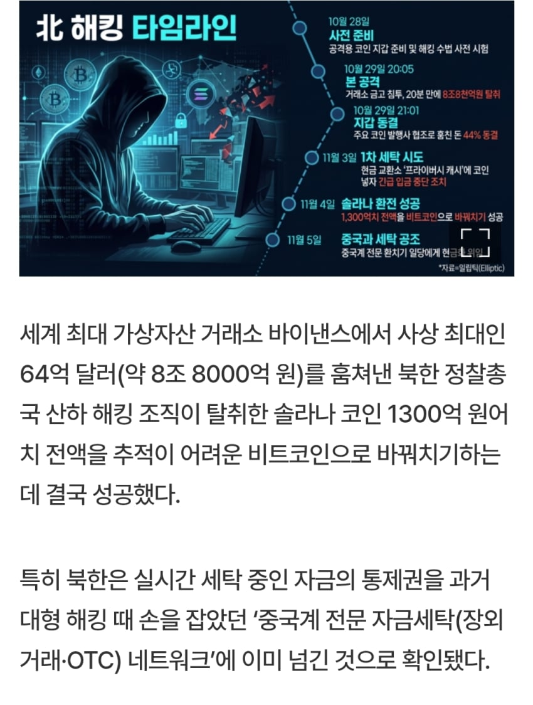
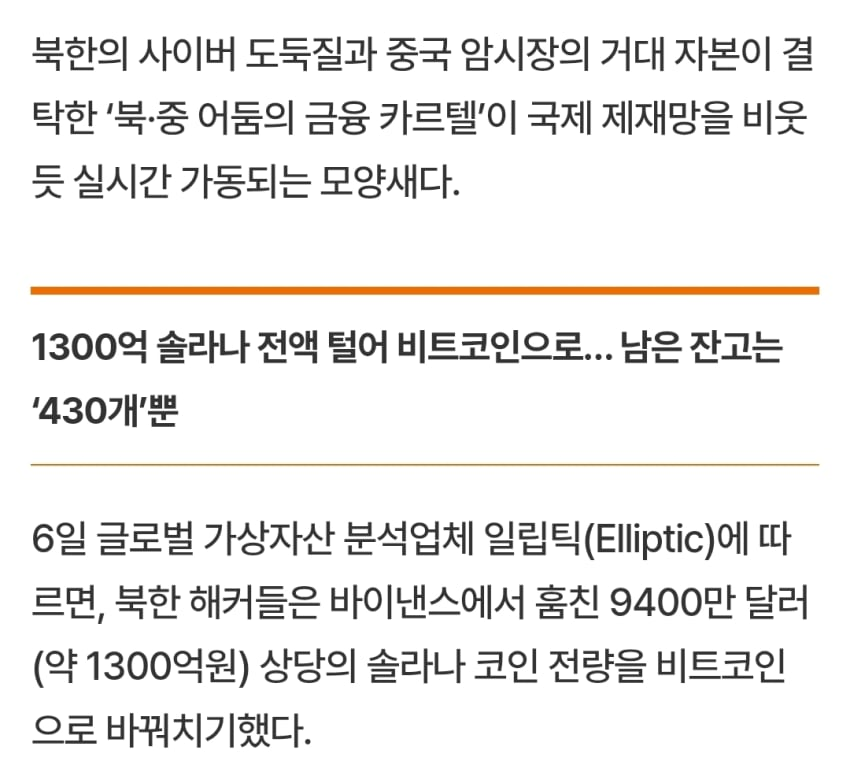
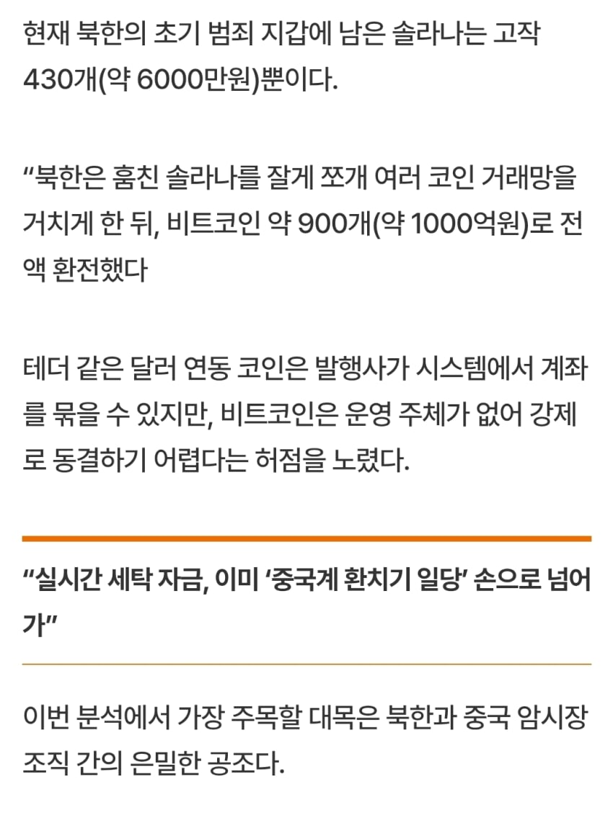
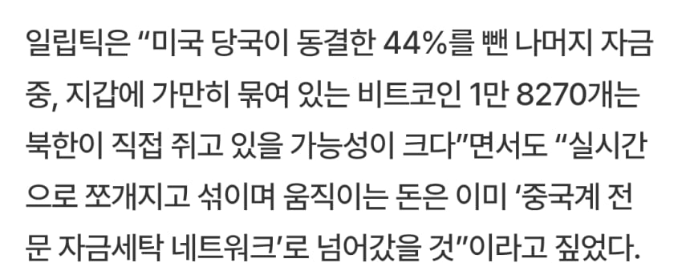
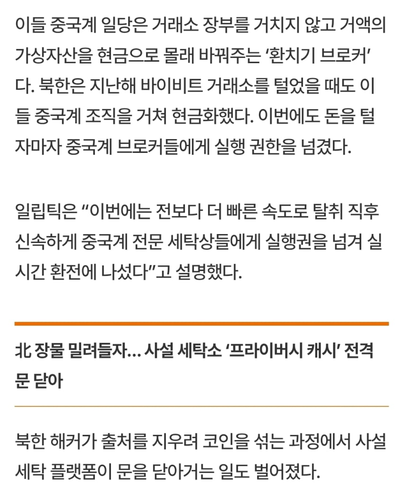
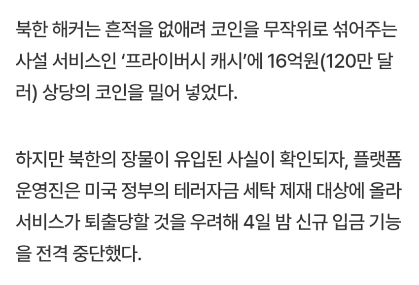

https://www.mk.co.kr/news/stock/12200371 [단독]“1300억원 코인 세탁 완료”...北, 바이낸스 장물 ‘中 환치기상’에게 넘겼다 - 매일경제세계 최대 가상자산 거래소 바이낸스에서 사상 최대인 64억 달러(약 8조 8000억 원)를 훔쳐낸 북한 정찰총국 산하 해킹 조직이 탈취한 솔라나 코인 1300억 원어치 전액을 추적이 어려운 비트코인으로 바꿔치기하는 데 결국 성공했다. 특히 북한은 실시간 세탁 중인 자금의 통제권을 과거 대형 해킹 때 손을 잡았던 ‘중국계 전문 자금세탁(장외거래·OTC) 네트www.mk.co.kr출처: 중도우파 갤러리 [원본 보기]

댓글
댓글 보관 대기 중입니다. 원문 응답 오류가 있으면 다음 실행에서 다시 수집합니다.